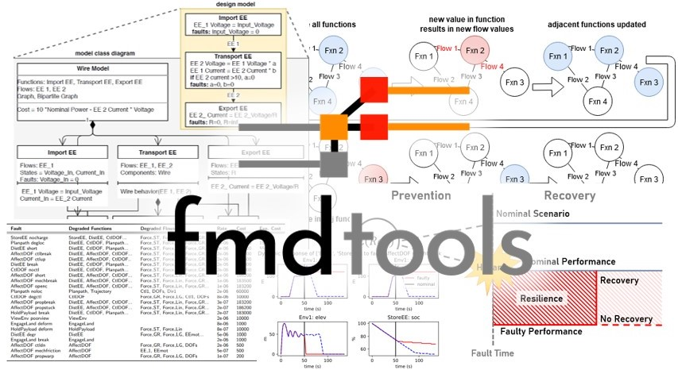

Welcome to fmdtools’s documentation!¶

fmdtools (Fault Model Design tools) is a toolkit for modelling system resilience in the early design phase. With it, one can simulate the effects of faults in a system to build resilience into the system design at a high level. To achieve this, fmdtools provides a Python-based design environment where one can represent the system in a model, simulate the resilience of the model to faults, and analyze the resulting model responses to iteratively improve the resilience of the design.
This release is version 0.9.2

Overview:¶
The main impetus for the development of the fmdtools project was a lack existing tools to enable early function-based fault simulation for early functional hazard assessment. Researchers thus had to re-implement modelling, simulation, and analysis approaches for each new case study or methodological improvement. The fmdtools resolves this problem by separating resilience modelling, simulation, and analysis constructs from the model under study, enabling reuse of methodology between case studies. Towards this end, the fmdtools package provides three major pieces of functionality:
Model definition constructs which enable systematic early specification of the high level structure and behaviors of a system with concise syntax (fmdtools.modeldef).
Simulation methods which enable the quantification of system performance and propagation of hazards over a wide range of operational scenarios over a wide range of model types (fmdtools.faultsim).
Analysis methods for quantifying resilience and summarizing and visualizing behaviors and properties of interest (fmdtools.resultdisp).
Key Features:¶
fmdtools uses an object-oriented undirected graph-based model representation which enables arbitrary propagation of flow states through a model graph. As opposed to a procedural directed graph-based model representation (a typical strategy for developing fault models in code in which each function or component is represented by a method, the inputs and outputs are which are connected with connected functions/components in a larger model method), this enables one to:
propagate behaviors in multiple directions in a model graph, e.g., closing a valve will not just reduce flow in the downstream pipe but also increase pressure in upstream pipes.
define the data structures defining a function/component (e.g. states, faults, timed events) with the behavioral methods in a single logical structure that can be re-used and modified for similar components and methods (that is, a class, instead of a set of unstructured variables and methods)
fmdtools can represent the system at varying levels of fidelity through the design process so that one can start with a simple model and analysis and make it more detailed as the design is elaborated. A typical process of representing the system (from less to more detail) would involve:
Creating a network representation of the model functions and flows to visualize the system and identify structurally-important parts of the model’s causal structure
Elaborating the flow attributes and function failure logic in a static propagation to simulate the timeless effects of faults in the model
Adding dynamic states and behaviors to the functions as well as a simulation times and operational phases in a dynamic propagation model to simulate the dynamic effects of faults simulated during different time-steps
Instantiating functions with component architectures to compare the expected resilience and behaviors of each
Defining stochastic behavioral and input parameters to simulate and analyze system resilience throughout the operational envelope
fmdtools provides convenience methods for quickly visualizing the results of fault simulations with commonly-used Python libraries to enable one to quickly assess:
effects of faults on functions and flows in the model graph at a given time-step
the behavior of system states over time in nominal and faulty scenarios over a range of operational parameters
the effect of model input parameters (e.g., ranges, stochastic inputs) on nominal/faulty operations
the high-level results of a set of simulations in an FMEA-style table of faults, effects, rates, costs, and overall risk
simulation responses over a range or distribution of model and scenario parameters
fmdtools is a research code and is under active development. As a result, Some use-cases may not work as desired and may change. If you find a bug or would like to contribute, contact the contributors.
Getting Started¶
A version of the fmdtools toolkit can also be installed directly from the PyPI package repository using pip install fmdtools.
Prerequisites¶
fmdtools requires Python 3 and depends on these packages:
networkxnumpyordered-dictdillpickletqdmmatplotlibpandasnetgraph
These packages are optional but reccomended:
jupyter notebook(for notebooks)multiprocessing(for parallel execution–Pathos and multiprocess can also be used)graphviz(to plot using graphviz options)quadpy(for quadrature sampling)scipy(for using statistical distributions in parameter sampling)pyvis(for interactive html views of model graphs)ffmpeg(for animations)shapely(for multirotor model)pycallgraph(for model profiling)
These must be installed (e.g. using pip install packagename or conda install packagename) them before running any of the codes in the repository.
While it is not required to use any of the methods, Jupyter notebook/Jupyter lab is helpful for analyzing model simulations and is required to follow through the provided examples.
Documentation and Examples¶
An overview of fmdtools is provided in the accomanying paper:
Additionally, this repo provides a few resources to get familiar with fmdtools:
[Intro to fmdtools powerpoint](docs/Intro to fmdtools.pptx) and the corresponding tutorial pump example/ex_pump.py, and pump example/tutorial_complete.ipynb
[Tutorial](pump example/tutorial_complete.ipynb)
Some documented examples are provided, including:
A baseline example of most provided methods in conceptual design-stage pump system in
pump example/ex_pump.pyandpump example/Pump Example Notebook.ipynbAn case study following the modelling process of going from a less detailed to more detailed model is provided in
multirotor example\Demonstration.ipynbfor the design of a multirotor drone.An example replicating previous the simple electric power system implemented in IBFM in the
eps exampledirectory, with some basic fault propagation and visualization.Using the
componentclass to model human interactions with the modelled system inhold-up tank example.
More detailed documentation for each of the classes/methods/modules is provided and can be viewed by going through the fmdtools source code (or by using
help(methodname))
Contributors¶
Hannah Walsh : Network analysis codes
Sequoia Andrade : Graph visualization graphviz options, Code review
License¶
MIT